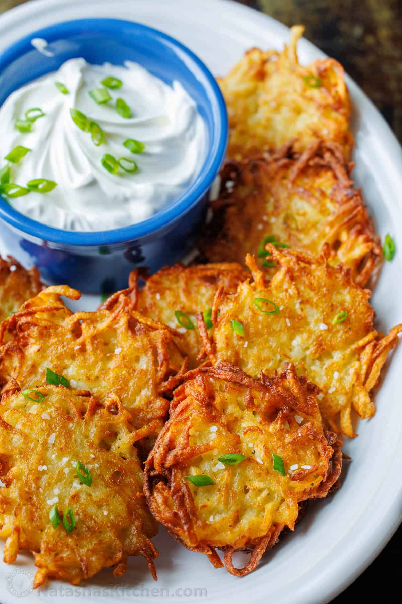

Potato Latkes

Description
These potato latkes are perfectly crispy, and have the familiar homey feeling to them, as a classic Jewish comfort food.
Ingredients
- 1 lb 2 large russet potatoes, peeled
- 1/4 cup all purpose flour
- 1/2 medium onion, peeled
- 1 tsp baking powder
- 1 tsp kosher sea salt
- 1/4 tsp ground black pepper
- 1 large egg
- vegetable oil, or extra light olive oil for frying
- apple sauce to eat it with
Steps
- Grate the potatoes and onions on the large holes of a grater. Transfer the mixture to a cheesecloth or lint free dishtowel, and squeeze out as much of the liquid as possible.
- In a large mixing bowl, whisk together 1/4 cup flour, 1 tsp baking powder, 1 tsp salt, and 1/4 tsp pepper, then whisk in the egg. Add the squeezed, dried potatoes and stir until they're evenly coated in the batter.
- Heat a large, heavy-bottomed skillet over medium-high heat and add about 1/4” of oil (enough to coat the bottom of the pan generously). Once the oil shimmers, add the batter to the pan 1 heaping tablespoon at a time (or use a trigger-release ice cream scoop) and immediately press with a spatula to form disks. Fry until the edges are browned, 4-5 minutes. Flip and cook until the second side is golden brown, about 3 to 4 minutes more.
- Transfer latkes to a paper-towel-lined plate and immediately sprinkle lightly with kosher salt. Repeat with the remaining potato mixture adding more oil to the skillet as needed. Serve warm latke with apple sauce.
- Enjoy!